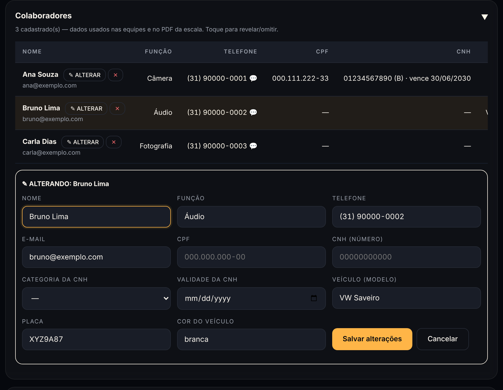

05 · Meu negócio
Gestão de pessoas
Cadastre quem trabalha com você, monte as equipes e guarde os documentos de cada uma.

Colaboradores com CPF e CNH — tocando em ✎ ALTERAR, o formulário abre com os dados da pessoa.
- 1Colaboradores: nome, função, telefone, e-mail, CPF, CNH (número, categoria e validade) e o veículo (modelo, placa e cor).
- 2✎ ALTERAR ao lado do nome muda qualquer dado; o ✕ exclui (pede confirmação).
- 3Ou toque em Gerar link de cadastro e mande pelo WhatsApp — a pessoa preenche (inclusive CPF e CNH) e o cadastro chega para você aprovar.
Clientes também
Em Eventos → Clientes cada cliente tem ✎ ALTERAR e os campos CNPJ (empresa), CPF (pessoa física) e CNH. O link de cadastro do cliente também pede esses dados.